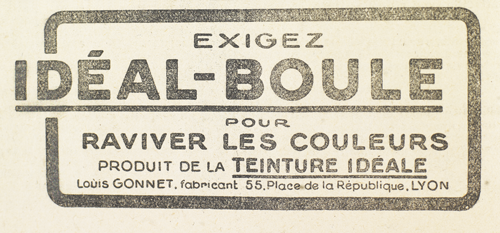

Il en fut tout ému. Elle redoutait ce premier contact entre eux. N’allait-il pas l’outrager ? Se jeter sur elle, la frapper, lui dire d’abominables choses ? Ou bien s’enfuir avec ce mépris qui est pire que tout ? Raoul tremblait comme un enfant. Rien ne comptait pour lui, à la minute actuelle, que ce qui compte éternellement pour les amants, le baiser, l’union des mains et des souffles, la folie des regards qui s’étreignent et des lèvres qui défaillent de volupté.
Il tomba à genoux devant elle.
La rançon de telles amours, c’est le silence auquel elles sont condamnées. Alors même que les bouches parlent, le bruit des mots échangés n’anime pas le morne silence des pensées solitaires. Chacun poursuit sa propre méditation, sans jamais pénétrer dans la vie même de l’autre. Dialogue désespérant dont Raoul toujours prêt à s’épancher, souffrait de plus en plus.
Elle aussi, Josine, devait en souffrir, à en juger par certains moments de lassitude extrême où elle semblait sur le bord même de ces confidences qui rapprochent les amants plus encore que les caresses. Une fois elle se mit à pleurer entre les bras de Raoul, avec tant de détresse qu’il attendit la crise d’abandon. Mais elle se reprit aussitôt, et il la sentit plus lointaine que jamais.
« Elle ne peut pas se confier, pensa-t-il. Elle est de ces êtres qui vivent à part, dans une solitude sans fin. Elle est captive de la sorte d’image qu’elle veut donner d’elle-même, captive de l’énigme qu’elle a élaborée et qui la tient dans ses mailles invisibles. Comme fille de Cagliostro, elle s’est habituée aux ténèbres, aux complications, aux trames, aux intrigues, aux travaux souterrains. Raconter à quelqu’un l’une de ces machinations, c’est lui donner le fil qui le guiderait dans le labyrinthe. Et elle a peur et elle se replie sur elle-même. »
Par contrecoup il se taisait également et se gardait de faire allusion à l’aventure où ils s’étaient engagés et au problème dont ils cherchaient la solution. S’était-elle emparée du coffret ? Connaissait-elle les lettres qui ouvraient la serrure ? Avait-elle plongé sa main au creux de la borne légendaire et puisé à même les mille et mille pierres précieuses ?
Sur cela, sur tout, le silence.
D’ailleurs, dès qu’ils eurent dépassé Rouen, leur intimité se relâcha. Léonard, bien qu’évitant Raoul, reparut. Les conciliabules recommencèrent. La berline et les petits chevaux infatigables, chaque jour, emmenèrent Joséphine Balsamo. Où ? Pour quelles entreprises ? Raoul nota que trois des abbayes se trouvaient à proximité du fleuve : Saint-Georges-de-Boscherville, Jumièges, Saint-Wandrille. Mais alors, si elle s’enquérait de ce côté, c’est que rien n’était encore résolu, et qu’elle avait tout simplement échoué ?
Cette idée le rejeta brusquement vers l’action. De l’auberge où il l’avait laissée près de la Haie d’Étigues, il fit venir sa bicyclette et poussa jusqu’aux environs de Lillebonne qu’habitait la mère de Brigitte. Là il apprit que douze jours auparavant – ce qui correspondait au voyage de Joséphine Balsamo – la veuve Rousselin avait fermé sa maison pour rejoindre, disait-elle, sa fille à Paris. Le soir précédent, selon l’affirmation des voisines, une dame était entrée chez elle.
À dix heures du soir seulement, Raoul revint vers la péniche qui stationnait au sud-ouest de la première boucle après Rouen. Or, un peu avant d’arriver, il dépassa la berline de Josine que traînaient péniblement, comme des bêtes exténuées, les petits chevaux de Léonard. Au bord du fleuve, Léonard sauta, ouvrit la portière, se pencha, et repartit avec le corps inerte de Josine, chargé sur son épaule. Raoul accourut. À eux deux ils installèrent la jeune femme dans sa cabine où le ménage des mariniers les rejoignit.
– Soignez-la, fit l’homme rudement. Elle n’est qu’évanouie. Mais « le torchon brûle ». Que personne ne bouge d’ici !
Il regagna la voiture et partit.
Toute la nuit Joséphine Balsamo eut le délire, sans que Raoul pût saisir aucun des mots incohérents qui lui échappaient. Le lendemain, l’indisposition était finie. Mais, le soir, Raoul ayant gagné le village voisin, se procura un journal de Rouen. Il lut, parmi les faits divers de la région :
« Hier après-midi, la gendarmerie de Caudebec, avertie qu’un bûcheron avait entendu des cris de femme appelant au secours et qui sortaient d’un ancien four à chaux situé sur la lisière de la forêt de Maulévrier, mit en campagne un brigadier et un gendarme. Comme ces deux représentants de l’autorité approchaient du verger où se trouve le four à chaux, ils aperçurent, par-dessus le talus, deux hommes qui traînaient une femme vers une voiture fermée près de laquelle il y avait debout, une autre femme.
« Obligés de contourner le talus, les gendarmes n’arrivèrent à l’entrée du verger qu’après le départ de la voiture. Aussitôt la poursuite commença, poursuite qui aurait dû se terminer par la victoire facile de la maréchaussée. Mais la voiture était attelée de deux chevaux si rapides, et le conducteur devait si bien connaître le pays, qu’il réussit à s’échapper par le lacis de routes encaissées qui montent vers le nord, entre Caudebec et Motteville. D’ailleurs la nuit tombait, et l’on n’a pas encore réussi à établir par où tout ce joli monde s’est sauvé. »
« Et on ne le saura pas, se dit Raoul en toute certitude. Personne autre que moi ne pourra reconstituer les faits, puisque moi seul connais le point de départ et le point d’arrivée. »
Et Raoul, ayant réfléchi, formula ses conclusions.
« Dans l’ancien four à chaux, un fait indéniable : la veuve Rousselin est là, sous la surveillance d’un complice. Joséphine Balsamo et Léonard qui l’ont attirée hors de Lillebonne et enfermée, viennent la voir chaque jour et tentent de lui arracher le renseignement définitif. Hier, sans doute l’interrogatoire fut un peu violent. La veuve Rousselin crie. Les gendarmes arrivent. Fuite éperdue. On s’échappe. Le long de la route on dépose la captive dans une autre prison préparée d’avance, et c’est une fois de plus le salut. Mais toutes ces émotions ont provoqué chez Joséphine Balsamo une de ces crises nerveuses dont elle est coutumière. Elle s’évanouit. »
Raoul déplia une carte d’état-major. De la forêt de Maulévrier à la Nonchalante, le chemin direct mesure une trentaine de kilomètres. C’est aux environs de ce chemin, plus ou moins à droite, plus ou moins à gauche, que la veuve Rousselin est emprisonnée.
« Allons, se dit Raoul, le terrain de la lutte est circonscrit, et l’heure d’entrer en scène ne tardera pas pour moi. »
Dès le lendemain il se mettait à l’ouvrage, flânant sur les routes normandes, interrogeant, et tâchant de relever les points de passage et les points d’arrêt « d’une vielle berline attelée de deux petits chevaux ». Logiquement, fatalement, l’enquête devait aboutir.
Ces journées-là furent peut-être celles où l’amour de Joséphine Balsamo et de Raoul prit son caractère le plus âpre et le plus passionné. La jeune femme qui se savait recherchée par la police, et qui n’avait pas oublié les incidents de l’auberge Vasseur, à Doudeville, n’osait quitter la Nonchalante et sillonner le pays de Caux. Aussi Raoul la retrouvait-il entre chacune de ses expéditions, et ils se jetaient aux bras l’un de l’autre avec le désir exaspéré de goûter les joies dont ils pressentaient la fin prochaine.
Joies douloureuses, comme en pourraient avoir deux amants que le destin a séparés. Joies suspectes que le doute empoisonnait. L’un et l’autre ils devinaient leurs desseins secrets, et, quand leurs lèvres étaient unies, chacun savait que l’autre, tout en l’aimant, se conduisait comme s’il l’eût détesté.
– Je t’aime, je t’aime, répétait Raoul éperdument, tandis qu’au fond de lui il cherchait les moyens d’arracher la mère de Brigitte Rousselin aux griffes de la Cagliostro.
Ils se serraient parfois l’un contre l’autre avec la violence de deux adversaires qui se battent. Il y avait de la brutalité dans leurs caresses, de la menace dans leurs yeux, de la haine dans leurs pensées, du désespoir dans leur tendresse. On eût dit qu’ils se guettaient comme pour trouver le point faible où la blessure serait le plus décisive.
Une nuit Raoul se réveilla, avec une sensation de gêne, Josine était venue jusqu’à son lit et le regardait à la lueur d’une lampe. Il frissonna. Non pas que le visage charmant de Josine eût une autre expression que son sourire ordinaire. Mais pourquoi ce sourire sembla-t-il à Raoul si méchant et si cruel ?
– Qu’est-ce que tu as ? dit-il et que me veux-tu ?
– Rien… rien…, fit-elle d’un ton distrait et en s’éloignant.
Mais elle revint à Raoul et lui montra une photographie.
– J’ai trouvé ça dans ton portefeuille. Il est incroyable que tu gardes sur toi le portrait d’une femme. Qui est-ce ?
Il avait reconnu Clarisse d’Étigues, et il répondait en hésitant :
– Je ne sais pas… un hasard…